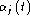

Baum-Welch training is similar to the Viterbi training described in the previous section except that the hard boundary implied by the function is replaced by a soft boundary function L which represents the probability of an observation being associated any given Gaussian mixture component. This occupation probability is computed from the forward and backward probabilities.
For the isolated-unit style of training, the forward probability  for 1<j<N and is calculated by the forward recursion
with initial conditions given by
for 1<j<N and final condition given by
The backward probability for 1<i<N and is calculated by the backward recursion
with initial conditions given by
for 1<i<N and final condition given by
In the case of embedded training where the HMM spanning the observations
is a composite constructed by concatenating Q subword models, it is
assumed that at time t, the and
values corresponding to the entry state and exit states of a HMM
represent the forward and backward probabilities at time
and  , respectively, where is small. The equations
for calculating and are then as follows.
, respectively, where is small. The equations
for calculating and are then as follows.
For the forward probability, the initial conditions are established at time t=1 as follows

where the superscript in parentheses refers to the index of the model in the sequence of concatenated models. All unspecified values of are zero. For time t > 1,

For the backward probability, the initial conditions are set at time t=T as follows


where once again, all unspecified values are zero. For time t<T,
The total probability can be computed from either the forward or backward probabilities